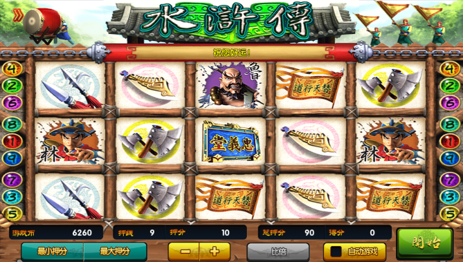

《水浒传》是一款15连9线连线机的水果机游戏模式，源自赌城拉斯维加斯，参照水果机、苹果机、拉霸机的模式，每轮中奖后有类似骰子梭哈的比大小的游戏。另外，达到条件还能触发和水果机一样的“小玛丽”游戏送奖，增加了游戏的趣味性和刺激感。

水浒传因其刺激性，挑战性而受到玩家的青睐，纹桃也推出了这款十大平台热门游戏之一的《水浒传》，奖励刺激，规则如下：
1) 基本奖
? 三连线：由左端至右端或右端至左端连续三个相同图标连线
? 四连线：由左端至右端或右端至左端连续四个相同图标连线
基本奖励表，出现连线成功图标则获得奖励=单线下注*中奖图标对应倍率
例出现三连金刀图标，下注金额为单线1，则本局获得奖励为=1*5=5游戏币。
2) 全盘奖
押线开出来的奖全部是同一个图标、全部是人物或者武器，都可获得全盘奖。
3) 比倍游戏
比倍游戏是逼真的骰子游戏，当主游戏中奖后，开启比倍游戏进行骰子猜大小游戏。
a) 比倍押注规则
? 半比倍：即选择当局得分的一半进行押注比分，剩下一半直接结算。
? 全比倍：即选择当局得分全部下注押注比分。
? 双比倍：即选择当局得分的双倍全部下注押注比分。
b) 比倍游戏规则
玩家选择大/小/和三个界面区域进行下注，派彩分别为：大2倍（对子4倍），和6倍，小2倍（对子4倍）。
猜中骰子对应的点数（2颗骰子点数总和）则获得奖励，60S内按确定（enter键）继续比倍,否则按空格键退出比倍游戏。
猜错则损失所押注的游戏币，比倍游戏直接结束退出返回游戏主界面。
4) 小玛丽游戏
当玩家押中3个或3个以上的水浒传图标即可进入彩金游戏，彩金游戏是经典的转盘游戏。此游戏不消耗玩家身上的金币，只要不停留在“EXIT”图标上即可一直游戏下去，停下一次算一轮游戏结束，如有多次玛丽机会，可继续进行游戏。
a) 小玛丽游戏规则
? 靠左边或右边三个水浒传连线，可玩BONUS GAME一次。
? 靠左边或右边四个水浒传连线，可玩BONUS GAME两次。
? 靠左边或右边五个水浒传连线，可玩BONUS GAME三次。
? 一局游戏玩家最多可以玩BOUNS GAME二十七次。
b) 小玛丽游戏中奖规则
? 外围灯号图案与中间滚轮图案相同时，可得该图案对应倍数。
? 中间三个滚轮相同时，可另得20倍奖金。
? 中间四个滚轮相同时，可另得500倍奖金。
总的来说，水浒传是一款趣味性很强的接机游戏。纹桃科技致力于棋牌游戏开发13年，拥有大量开发运营经验和大批成功案例。
想打造一款迅速盈利的水浒传游戏，欢迎咨询QQ/电话热线：18711739336
了解更多棋牌游戏行业信息：在线咨询>>


游戏产品
PRODUCTS

售后服务
SERVICE

技术支持
TECHNOLOGY

运营指导
OPERATING